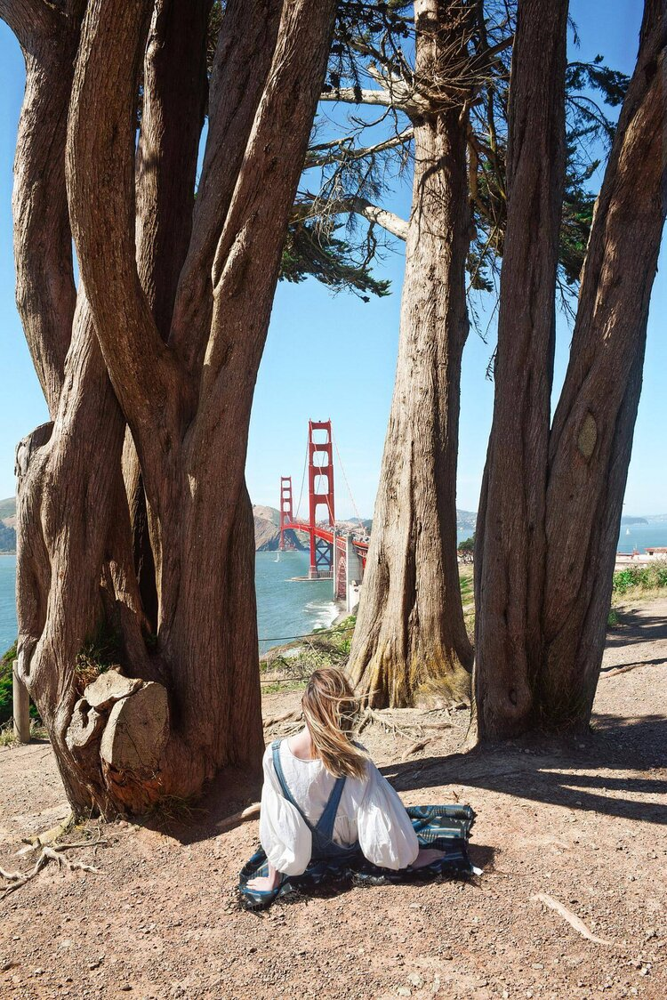
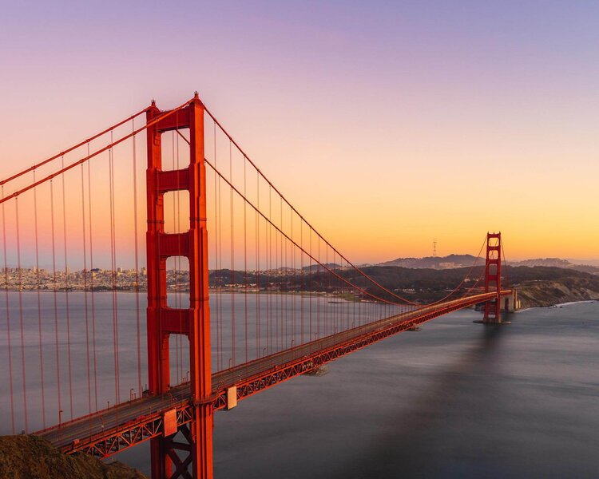
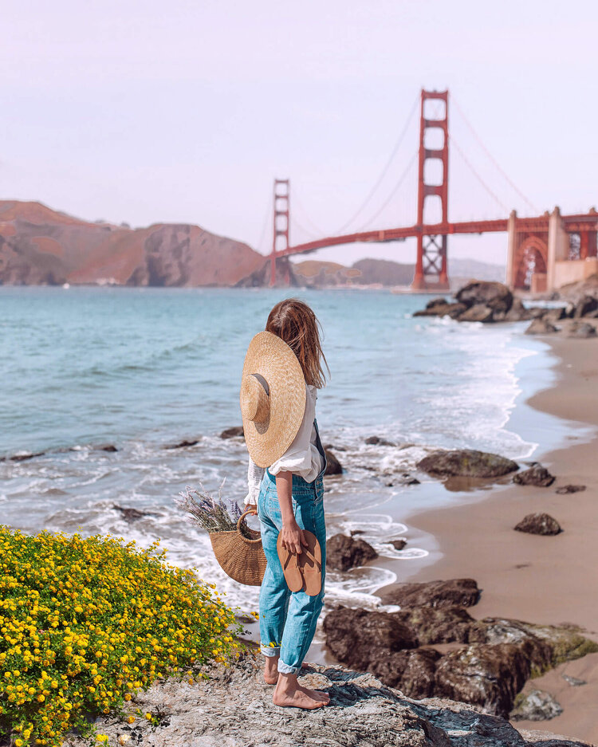
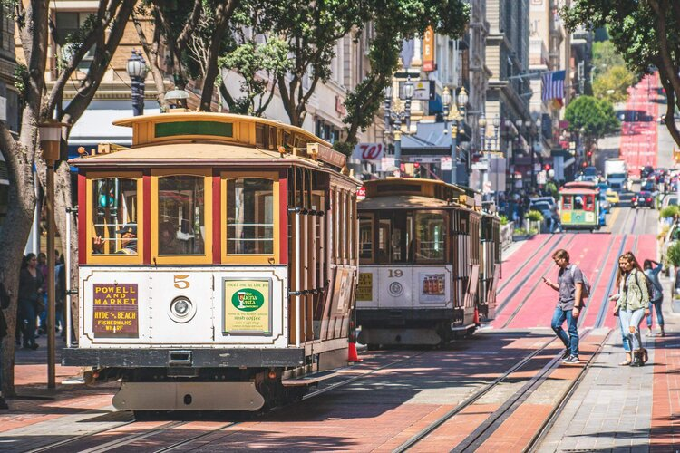
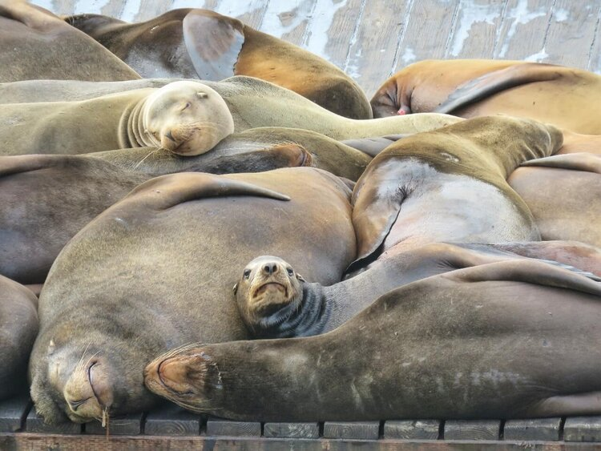
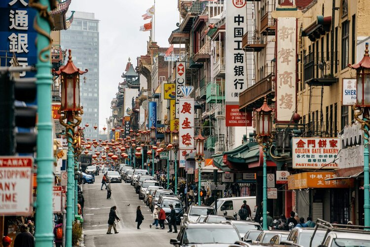
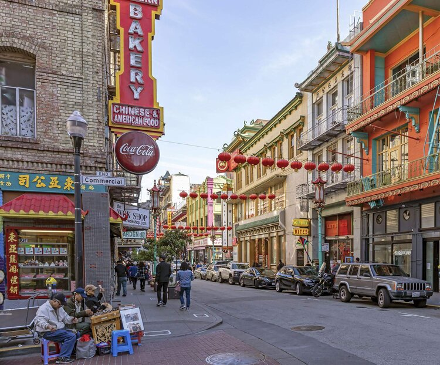

Golden Gate Bridge
Most people park at the Golden Gate Welcome Center and walk over from there, but a local secret is to park at Battery Godfrey. From here, you can get a unique and stunning view of the Golden Gate Bridge that most tourists don’t ever get to see. From here, you can walk across the Golden Gate and back. It’s one of the many free things to do in San Francisco.
Bring layers - the Golden Gate Bridge is known to be quite windy! Optional: Once you walk across the bridge, you can walk up Conzelman Road to Battery Spencer for what I consider to be the best view of Golden Gate Bridge, hands down. A great way to see the Golden Gate Bridge is by Go Car! It’s super fun and a very memorable experience!
Bake Beach & Marshall Beach
For another unique view of the Golden Gate Bridge, locals often head to Baker Beach or Marshall Beach. You’ll be able to walk next to the crashing waves of the Pacific Ocean with amazing views of the bridge.
One of my favorite things to do is bring a picnic blanket, some snacks, and good company for a nice day out on the beach here. Another option is to walk along the Batteries to Bluff trail, which also has sweeping views! (who would have guessed?)
Ride a Cable Car
Nothing is more recognizable than the iconic Cable Cars of San Francisco. Many people hop on at Powell St & Market St station to take the ride to Fishermans Wharf. For the best overall views of the city, take the Powell Hyde Line from the Powell & Market stop. It goes through Russian Hill, past Lombard Street, with the final descent opening to a grand view of the Bay. My preferred view is hanging off the side of the cable car, but be careful - passing cable cars barely have any clearance!
FisherMans Wharf
Although it’s regarded by many locals as a tourist trap - there are some great places here that even many locals like myself visit frequently.
- Sea Lions - who can resist these sun-bathing cuties? Watch as they jump in and out of the water and perform playful antics with each other.
- Mirror Maze - bring the inner child out in you with this trippy mirror maze complete with UV lights, fun music, and a fun maze!
- Musee Mécanique - this amazing collection of old-school arcade games is a fun way to spend an hour or two!
Chinatown
This is one of the largest and oldest Chinatowns in the world. While not much has changed in the past 40 years, some things are starting to modernize here. One of the most picturesque street corners is at Eastern Bakery (Grant and Commercial St) with the combination of red street lanterns, beautiful street signs, and Chinese temples pagoda lining the street.
For some delicious, authentic Sichuan food, make sure to check out Spicy King - it’s one of our favorite restaurants in town! For Michelin recommended Dim Sum, Lai Hong Lounge is another favorite of ours. The Coffee Movement, run by Australians, has some of the best coffee in the city. Golden Gate Bakery has some of the best Hong Kong style egg custard tarts in America, but unfortunately, it’s a coin flip if the shop will be open when you swing by as the ladies who run it are always ‘on vacation’.